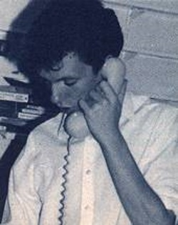

Interview with Barnaby Page
Editor of CRASH Magazine, January 1998
How did you get started in computer journalism?
By accident: very uncommonly for games magazines in the Eighties, I had a background in 'straight' journalism as a newspaper reporter and then a magazine sub-editor (the person who writes the headlines, corrects the spelling, watches out for libel, etc). I was doing that on a Newsfield magazine called LM -- a sort of early stab at Loaded, but not quite right for the time. When LM folded I moved over to Crash to carry on sub-editing and thanks to the rather rapid turnover of people at Newsfield, soon became editor. But at first, I scarcely knew a Manic Miner from a hole in the ground.
When did you first see a Spectrum and what were your first impressions?
I had one as a kid in, I suppose, about 1982. It was incredibly exciting: the first thing that kept me up till the small hours. (I hadn't quite discovered other adolescent interests yet.) I wrote complicated BASIC programs that I'm sure didn't do much, but didn't do much in what seemed like a very sophisticated way.
How did you leave the Spectrum scene? Were you sad to leave?
I left Crash after a falling-out with the management over issue sizes: just a silly spat. Having said that, we soon reconciled and I returned to Newsfield to spend another year or two in games journalism on TGM (The Games Machine - a multi-format computer mag released in the late '80s) as features editor and news editor, and also to launch Movie. I wasn't really sad or happy to leave; I thought of myself as a magazine person rather than a Spectrum person.
What are you doing now?
Editor of the Website for Eastern Counties Newspapers, the largest independent regional newspaper publisher in England (it says here). Also a bit of freelance writing here and there for PC and marketing magazines, and various volunteer bits for medical and conservation charities.
What were the best/worse things about the Speccy?
A decade's hindsight probably adds a rose-coloured tint, but I don't think people are being overly nostalgic when they say that there was a sense of excitement, a realisation that the home computer was the beginning of something big. Also, the industry in those days was a wild -- rather Wild West -- kind of scene with some very colourful characters, spectacular fortunes and bankruptcies, lots of sex and beer and chips and gravy, as I think the Macc Lads put it contemporaneously.
That all started to change in the late Eighties -- I wouldn't want to blame Trip Hawkins directly but I think the arrival of Electronic Arts in the UK was symbolically the point of transition into a proper grown-up industry. These days I find consoles rather cynical products, in that they offer no opportunities for growth and learning beyond what Sony or Nintendo have test-marketed into blandness.
What were your favourite Speccy games and why?
Well, I've been in the closet about this for ten years, but despite editing the market-leading magazine I hardly ever played a game! I'm a terrible player, anyway. I preferred to concentrate on news and features, and on coaching the school kids who did most of the reviewing.
Favourite Speccy coders/artists/musicians?
See above.
Favourite Speccy journalists?
John Minson was good, if heavily indebted to Hunter S Thompson. Marcus Berkmann of course has gone on to be quite a celebrated writer in other fields. I always liked and admired Teresa Maughan. Generally, the 'good journalists' were not necessarily the most accurate reviewers, and vice-versa.
Do you use an emulator to play Speccy games?
No.
What did you think of Your Sinclair and Sinclair User?
To be honest I thought SU a rather dull and shoddy magazine, though it was well-marketed -- Emap aren't stupid. YS was much the better, if downmarket of Crash: a soaraway Sun to our Spectrumgraph.
What do you think about modern games? Can they compete with the classics? Aren't they all presentation and no gameplay?
Exactly - see my comments about consoles above. Having said that, the only games I really do enjoy these days are the Sim series, which would scarcely have been possible on a Spectrum or C64.
Is there anything you miss about the old days?
The whole Lloyd Mangram scam - writing as a fictitious character and over the years inventing a whole complex background for him. Very few people ever caught on.
Proper typesetting machines, not these newfangled Apple Macs!
Any amusing anecdotes/stories etc about the old days?
This is about the Konix Multi-System, not the Spectrum, but Wynn Holloway never figured out how we got the story of the system's existence, which we broke exclusively in TGM (even beating the weeklies). He sacked or fell out with half his executive team, paranoid about a leak, and never suspected that Dominic Handy and I had simply got a software developer very drunk at the PCW Show in Earl's Court. I scribbled notes every time he went to the gents.
Also, we used to have competitions on Crash to see how many times we could get a certain word -- usually something like "eponymous" -- into an issue of the magazine without being obvious. Occasionally readers would pick up on it and do the same in letters back.
I grew up last Thursday, though.
Have you anything to say to people who still use the Speccy today?
Don't be ashamed. I still play the Pet Shop Boys.
Thanks to Barnaby for doing the interview.
Interview composed, conducted and edited by Philip Bee.